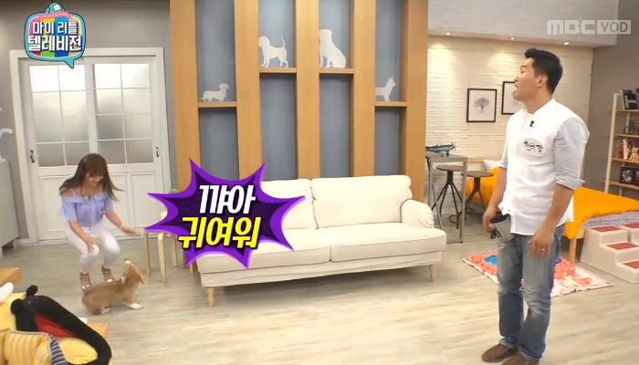
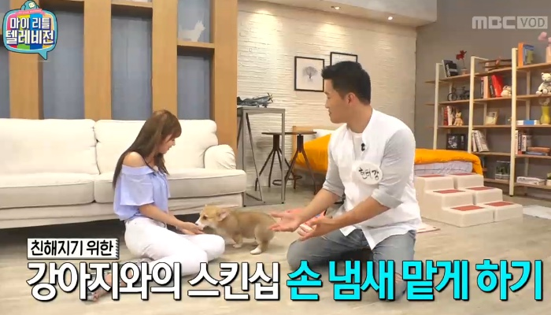
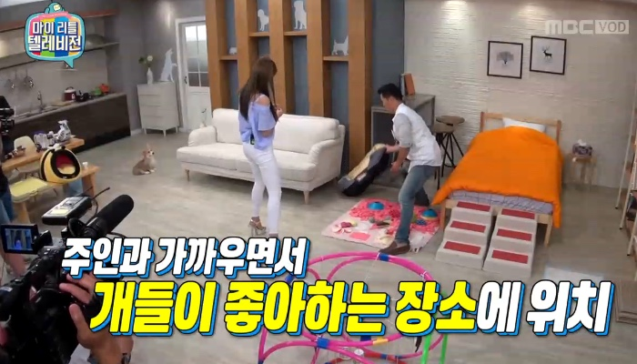
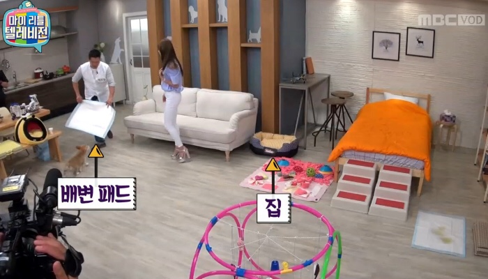
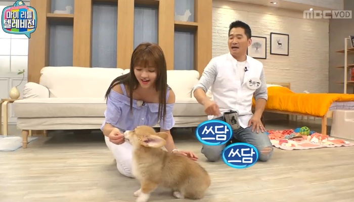
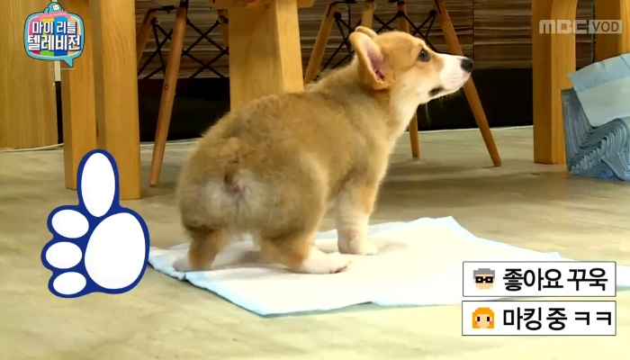
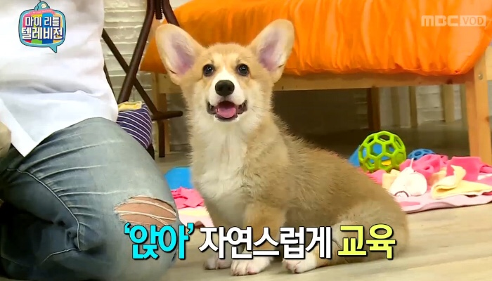
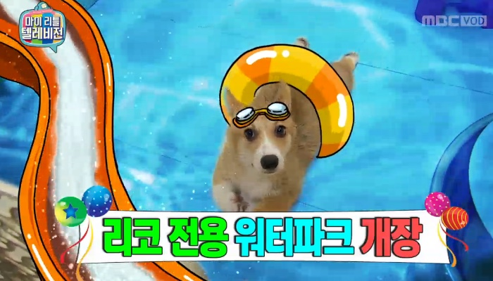
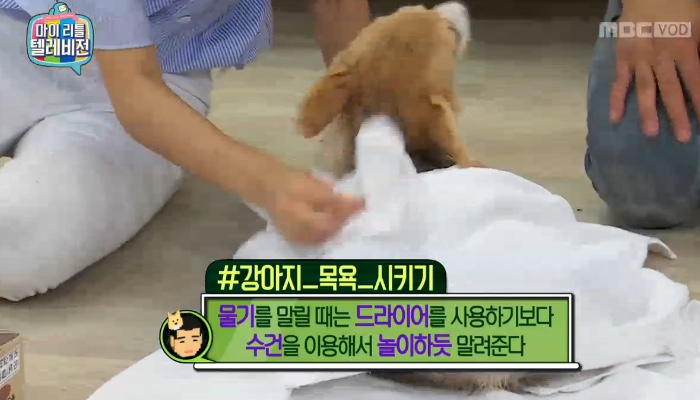

애견 훈련
1. 첫인사는 바닥에 내려놓기
강아지를 처음 집에 데려오자마자 만지거나 안기보다는 바닥에 내려놓고 냄새를 맡게 한다. 새로운 장소에 적응할 시간을 주는 것이다.
2. "귀엽다~!" 처음 보자마자 소리 지르는 건 금물
처음 만나자마자 호들갑을 떨면서 안으려고 하면 강아지는 깜짝 놀라고 만다. 이미 당신을 두려워하는 강아지와 친해지기는 더욱 어렵다.
3. 첫 접촉은 '손 냄새 맡게 하기'
강아지를 처음 봤을 때는 차분하게 손 냄새를 맡게 한다. 좀 더 친해지고 싶다면 분주하게 움직이며 역동적인 모습을 보여보자. 강아지와 함께 장난을 치며 친해질 수 있다.
4. 강아지 집은 화장실과 멀리 떨어진 곳에서
강아지는 집과 멀리 떨어진 곳에서 배변하려는 습성이 있다. 잠을 자거나 쉬는 집은 화장실과 좀 떨어져 있으면서 주인과 가까운 곳에 둔다.
5. 배변 패드는 강아지 집과 살짝 먼 곳에
화장실과 별도로 배변 패드를 깔아두면 강아지가 아무데나 실례하는 일을 막을 수 있다. 이 배변 패드를 놓는 위치 역시 집과 떨어진 곳에 두는 것이 좋다. 집에서 잘 보이면서 살짝 먼 곳이 적당하다.
6. 간식을 줄 때는 절대 만지지 말 것
강아지는 낯선 손길을 좋아하지 않는다. 훈련 목적으로 간식을 줄 때 강아지를 만지면, 효과가 반감된다.
7. 배변 패드에 배변했을 때 잘했다고 칭찬하기
배변 패드에 볼일을 본 강아지에겐 칭찬과 간식으로 보상한다.
8. '앉아' 또는 '엎드려' 훈련 시키기
간식을 강아지보다 살짝 위쪽으로 올리면 강아지가 바닥에 앉는다. 강아지가 바닥에 궁둥이를 붙이는 순간 간식을 준다. 같은 방식으로 간식을 강아지 앞다리 사이로 쭉 내리면 강아지가 바닥에 엎드린다. 강아지 앞 발꿈치가 바닥에 닿으면 간식을 줘서 보상한다.
9. 첫 목욕은 물놀이처럼
강아지에게 첫 목욕은 '개터파크'가 돼야 한다. 물을 조금 퍼서 적셔주기부터 시작한다. 물→샴푸→드라이 순서로 차차 적응시켜 준다.
10. 털을 말릴 때도 놀이처럼 천천히
젖은 강아지 털을 말릴 때는 바닥에 수건을 깔아주고 강아지가 먼저 다가오도록 유도한다. 강아지가 수건 위에 올라와서 비비거나 놀기 시작하면 천천히 물기를 닦아주며 함께 놀듯이 털을 말려준다.